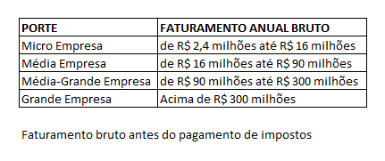
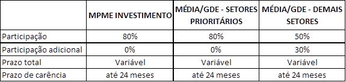
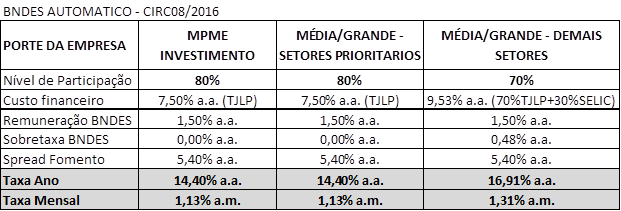

BNDES Automatico
Created Friday 23 October 2015 - Atualizado: 04/01/2016 - Autalizado em 07/03/2016
INDICAÇÕES PARA ESTA LINHA
Esta linha é a mais indicada quando a necessidade do cliente envolver Obras Civis (Construção e Reforma)
- Podem ser financiada a aquisição de máquinas e equipamentos novos e capital de giro desde que associado ao projeto.
**Lembre-se que a Fomento só acata projetos de BNDES Automático para quem possui CNPJ**
PÚBLICO ALVO
Empresas com faturamento anual conforme abaixo:

SEGMENTAÇÃO DA LINHA
(1) Indústria de bens de Capital (fabricação de máquinas e equipamentos)
(2) Geração de energia renovável (biomassa, solar e outras fontes alternativas)
(3) Modal ferroviário e hidroviário
(4) abastecimento de água,
(5) escoamento sanitário, efluentes e resíduos industriais e sólidos urbanos,
(6) mobilidade urbana
ITENS FINANCIÁVEIS
Investimentos Fixos:
2 - Máquinas e equipamentos novos, de fabricação nacional e credenciados no BNDES;
3 - Gastos com estudos e projetos de engenharia relacionados ao investimento; com a comercialização de novos produtos e serviços; com treinamento de pessoal, desde que com objetivos e prazos definidos; com qualidade e produtividade, pesquisa e desenvolvimento, capacitação técnica e gerencial, atualização tecnológica e tecnologia da informação;
4 - Aquisição de software e prestação de serviços correlatos;
5 - Gastos com aquisição de matrizes e reprodutores, desde que vinculados a projetos de investimento;
6 - Capital de Giro associado ao valor financiado no limite máximo de 30% desde que a empresa fature menos de R$ 90 MM.
LIMITE FINANCIÁVEL
Limitado até 40% da Receita Bruta Anual do exercício anterior, conforme o rating do risco de crédito atribuído para a empresa, limitado também ao seu Patrimônio Líquido quando o financiamento for superior a R$ 1 milhão.
PRAZO TOTAL E CARÊNCIA
Prazo Máximo: 120 meses, incluída a carência até 12 meses.
Obs. No período de carência, haverá o pagamento de juros trimestralmente e durante a fase de amortização, os juros serão pagos juntamente com o principal mensalmente.
NÍVEL PARTICIPAÇÃO E PRAZO TOTAL

A participação adicional de 30% terá juros baseados em SELIC
No caso de empresa em implantação a participação máxima da Fomento Paraná será de 60% dos investimentos totais financiáveis.
Prazos totais e de carência definidos em função da capacidade de pagamento do financiamento, respeitando o prazo total máximo de 120 meses e de carência de 24 meses.
TAXA DE JUROS
** Alertar o cliente que a taxa é pós-fixada, ou seja, TJLP e Selic são taxas que podem variar ao longo do contrato e qualquer variação, para mais ou para menos, incide sobre o contrato **

ROB: Receita Operacional Bruta (Faturamento Bruto antes do pagamento de impostos)
TJLP: Base jan/16 - mar/16 : 7,50 % a.a.
Selic: Base Março/2016 = 14,25% a.a
Sobretaxa fixa: Base jan/16 - mar/16 = 0,48% a.a
** CONDIÇÕES ESPECIAIS EMPRESAS COM FAT. MENOR QUE R$ 16 MILHÕES/ANO COM PROJETO FINALIZADO HÁ 12 MESES **
Será concedido o reembolso dos gastos correspondentes, desde que respeitadas as seguintes condições:
- os gastos já devem ter sido realizados;
- os investimentos devem ser passíveis de apoio pelo BNDES;
- não será financiado o capital de giro associado ao investimento;
LIMITE MÁXIMO DE FINANCIAMENTO NA CONDIÇÃO ESPECIAL:
PRAZOS/CARÊNCIA NA CONDIÇÃO ESPECIAL
TAXAS NA CONDIÇÃO ESPECIAL
Remuneração BNDES ............. 3,1% ao ano
Spread Fomento ..................... 5,4% ao ano
TOTAL ....................................... 16,0% ao ano ou 1,25% ao mês
GARANTIAS
LIBERAÇÃO DOS RECURSOS
As liberações dos recursos serão realizadas conforme o andamento do projeto.
No período de carência os juros serão pagos trimestralmente e após a carência o pagamento dos juros e principal será em parcelas mensais.
TARIFAS
Será cobrata Tarifa de Abertura de Cadastro de 1,5% sobre o valor financiado sendo 50% após o Enquadramento (não reembolsável) e os demais 50% no ato da liberação do financiamento (caso a propostas seja aprovada)
Valor máximo da tarifa é de R$ 50 mil
Veja mais no item 10. Tarifas
SOLICITAÇÃO DO FINANCIAMENTO
A solicitação é via site da Fomento Paraná segundo passo-a-passo descrito aqui
Backlinks: 5. Linhas de Financiamento:Banco do Empreendedor - MPE 2. Identificando a necessidade do cliente:PJ - Micro e Pequenas Empresas 2. Identificando a necessidade do cliente:PJ - Medias e Grandes Empresas:Medias Empresas 2. Identificando a necessidade do cliente:PJ - Medias e Grandes Empresas:Grandes Empresas 1. Wiki Fomento - Atendimento ao Cliente 5. Linhas de Financiamento